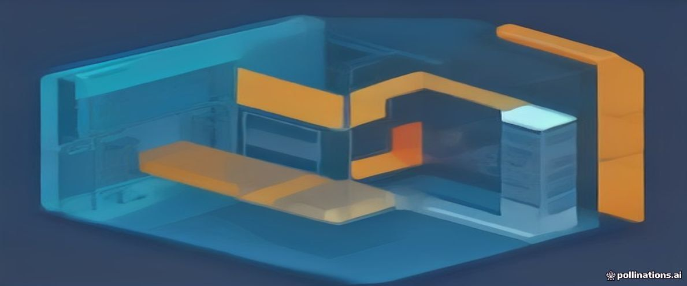

flowchart LR
subgraph Client["Tu mundo actual"]
UI["React app"] -->|"fetch POST /api/tasks"| Req
end
subgraph Server["El otro lado — este libro"]
Req["HTTP request"] --> R["1. Routing<br/>¿qué función atiende esto?"]
R --> A["2. Auth<br/>¿quién eres? ¿puedes?"]
A --> V["3. Validación<br/>¿el body es correcto?"]
V --> S["4. Servicio<br/>lógica de negocio"]
S --> D["5. Datos<br/>INSERT INTO tasks…"]
D --> Res["JSON response 201"]
end
Res -->|"res.json()"| UI
10 1. Dejas de consumir APIs. Ahora las construyes.
Todo lo que fetch oculta, alguien tuvo que construirlo

NotaEn una frase
Vas a aprender qué pasa del otro lado de un fetch: cómo un programa escucha un puerto, decide qué función atiende cada request y responde JSON. Al final del capítulo habrás levantado tu primer servidor en tu lenguaje.
No memorices nada de este libro. El objetivo no es recitar sintaxis — es reconocer el patrón cuando lo veas. Todo lo que necesites está a una búsqueda de distancia (la lupa del sidebar) o a una pregunta de tu AI CLI.
10.1 El problema
Llevas tiempo escribiendo código así:
const res = await fetch("/api/tasks", {
method: "POST",
headers: { "Content-Type": "application/json" },
body: JSON.stringify({ title: "Deploy to prod" }),
});
const task = await res.json();Sabes usar fetch. Pero… ¿qué hay del otro lado? ¿Qué programa escuchó ese request, dónde corre, cómo decidió responder 201 y no 200, quién convirtió tu JSON en una fila de base de datos?
Ese “otro lado” es lo que vas a construir durante todo este libro. Y la buena noticia: ya sabes la mitad. El protocolo es el mismo HTTP que conoces; lo que cambia es el rol — pasas de cliente a servidor.
10.2 Cómo lo resuelve un equipo
Cuando un equipo backend recibe un requerimiento (“hay que crear tareas”), la conversación nunca empieza en el código. Empieza en el contrato:
- ¿Qué ruta y qué verbo?
POST /api/tasks - ¿Qué shape tiene el body?
{ title: string, priority?: number } - ¿Qué responde en éxito?
201con la tarea creada - ¿Qué responde si el body está mal?
400/422con un error estructurado - ¿Quién puede llamarlo? ¿Cualquiera o solo usuarios autenticados?
Ejemplo de contrato terminado — esto es lo que el equipo acuerda antes de codear:
POST /api/tasks
Body: { "title": "Deploy to prod", "priority": 2 }
Éxito: 201 { "id": 7, "title": "Deploy to prod", "done": false }
Error: 422 { "error": { "code": "VALIDATION",
"fields": { "title": "required" } } }Ese contrato es lo único que el frontend conoce de ti. Es también lo que te permite reescribir tu backend en otro lenguaje sin que el frontend se entere — o que otro equipo escriba el frontend sin hablar contigo. El contrato es el producto; la implementación es un detalle.
10.3 Conceptos nuevos
- U Servidor: un proceso que corre siempre, escuchando un puerto, esperando requests. En frontend tu código lo ejecuta el navegador del usuario; en backend tú eres responsable de que el proceso esté vivo.
- U El ciclo request/response:
Request → Routing → Validación → Lógica → Datos → Response. Cada capítulo del libro profundiza en una de esas etapas. - U Las cuatro preguntas: ante cada request, un backend se pregunta ¿quién eres? (autenticación), ¿puedes? (autorización), ¿los datos son válidos? (validación), ¿qué hago con ellos? (lógica + persistencia).
- TS Py Go App vs servidor: en Node y Python el framework y el servidor son piezas separadas; en Go son la misma cosa. Detalle abajo.
10.4 La explicación visual
Cada etapa del diagrama es un capítulo (o varios). La gracia del diseño: si cada capa hace un trabajo, puedes testear la lógica sin HTTP y cambiar la base de datos sin tocar las rutas.
10.5 Implementación
El “hola mundo” honesto de un backend no es imprimir texto: es responder un request. Estos tres programas hacen exactamente lo mismo — exponen GET /health en el puerto 8000:
TipExplicación de: puerto
Un puerto es una puerta numerada dentro de una computadora: la IP llega al edificio, el puerto al departamento. :3000 = “la app que escucha en el departamento 3000”. Postgres suele usar 5432, HTTP el 80, HTTPS el 443.
// src/index.ts — sin frameworks: node:http es lo que Express usa debajo
import { createServer } from "node:http";
const server = createServer((req, res) => {
if (req.method === "GET" && req.url === "/health") {
res.writeHead(200, { "Content-Type": "application/json" });
res.end(JSON.stringify({ status: "ok" }));
return;
}
res.writeHead(404).end(); // ← routing a mano: un if por ruta
});
server.listen(8000);Esto es un servidor HTTP completo — Express solo te ahorra los if.
// src/index.ts — el canónico del libro
import express from "express";
const app = express();
app.get("/health", (_req, res) => {
res.json({ status: "ok" });
});
app.listen(8000, () => {
console.log("listening on http://localhost:8000");
});npm install express
npx tsx src/index.ts// Fastify — misma idea, más rápido y con schemas integrados
import Fastify from "fastify";
const app = Fastify();
app.get("/health", async () => ({ status: "ok" }));
app.listen({ port: 8000 });Qué te cuesta: Fastify es casi drop-in (más performance, plugins). NestJS te da arquitectura completa (decoradores, DI — estilo Angular) pero impone su estructura entera. Hono es ultraligero y corre en edge/bun/deno. Express sigue siendo el más común en equipos y docs.
# app/main.py — http.server: lo que hay debajo de todo
from http.server import BaseHTTPRequestHandler, HTTPServer
class Handler(BaseHTTPRequestHandler):
def do_GET(self):
if self.path == "/health":
self.send_response(200)
self.send_header("Content-Type", "application/json")
self.end_headers()
self.wfile.write(b'{"status": "ok"}')
else:
self.send_response(404)
self.end_headers()
HTTPServer(("0.0.0.0", 8000), Handler).serve_forever()Feo a propósito: así se siente HTTP sin framework. Uvicorn+FastAPI existe para no escribir esto.
# app/main.py — el canónico del libro
from fastapi import FastAPI
app = FastAPI()
@app.get("/health")
def health():
return {"status": "ok"}pip install fastapi uvicorn
uvicorn app.main:app --port 8000# Flask — el clásico minimalista: menos magia, más cables visibles
from flask import Flask
app = Flask(__name__)
@app.get("/health")
def health():
return {"status": "ok"}Qué te cuesta: Flask no trae validación ni async moderno (los agregas con plugins). Django es lo opuesto: baterías incluidas (ORM, admin, auth) pero impone “the Django way” entero. FastAPI queda en el medio: moderno, tipado, sin imponerte un monolito.
// main.go — en Go la stdlib YA es la respuesta seria
package main
import (
"encoding/json"
"net/http"
)
func health(w http.ResponseWriter, r *http.Request) {
json.NewEncoder(w).Encode(map[string]string{"status": "ok"})
}
func main() {
mux := http.NewServeMux()
mux.HandleFunc("GET /health", health)
http.ListenAndServe(":8000", mux)
}go mod init taskflow
go run .// chi — router ligero sobre net/http: mismos handlers, mejor routing
import "github.com/go-chi/chi/v5"
func main() {
r := chi.NewRouter()
r.Get("/health", health)
http.ListenAndServe(":8000", r)
}Qué te cuesta: chi es casi gratis (stdlib compatible, solo mejor mux). Gin/Echo son frameworks completos: más cómodos (JSON binding, middleware listo) pero otro modelo mental y una dependencia grande. En Go la stdlib es tan buena que la pregunta real es “¿necesito framework?” — muchas empresas dicen que no.
TipPrompt listo para tu AI
Crea un servidor HTTP mínimo que exponga GET /health respondiendo
{ "status": "ok" } en el puerto 8000, en [Express+TypeScript /
FastAPI+Python / net/http+Go]. Requisitos: código mínimo pero real,
comando para instalar dependencias y arrancar, y un curl para probarlo.
Después explícame línea por línea qué hace cada parte — quiero entender
qué es la "app" y qué es el "servidor" en este stack.10.6 ¿Por qué cada stack lo hace así?
Lo único que necesitas llevarte: los tres hacen lo mismo; lo que cambia es cuánto te esconden. Express y FastAPI separan “la app” de “el servidor”; en Go son la misma pieza. Si quieres el detalle, aquí está:
NotaDetalle: app vs servidor en cada stack
- Node/Express: el framework (
app) define rutas y responde;app.listencrea el servidor HTTP debajo. Dos piezas disfrazadas de una. - Python/FastAPI: la separación es explícita —
appes solo una aplicación ASGI (un objeto que sabe responder); otro proceso (uvicorn) es quien escucha el puerto y le pasa los requests. Por eso arrancas conuvicorn app.main:appy nopython main.py. - Go: no hay framework que separar —
net/httpes el servidor y el enrutador a la vez. El binario que compilas escucha el puerto directamente.
¿Por qué existe la separación app/servidor? Porque permite poner el servidor “tonto” (uvicorn, nginx) delante de varias aplicaciones, escalar workers, o testear la app sin abrir sockets. Go decide que esa indirección no vale la pena: simplicidad operativa sobre flexibilidad. Ninguna respuesta es “la correcta” — es una decisión de diseño del ecosistema, y reconocerlas así es pensar como backend.
TipOtras cimentaciones: ¿siempre un proceso escuchando un puerto?
Esta decisión es estructural: algo tiene que recibir el request y producir la respuesta — eso no se negocia. Pero la forma de la cimentación sí:
| Alternativa | Qué es | Qué te cuesta | Cuándo elegirla |
|---|---|---|---|
| Proceso + framework (este libro) | Tu proceso escucha un puerto 24/7 | Tú mantienes el proceso vivo | El default: control total, cualquier host |
| Serverless (Lambda, Cloud Functions) | Tu función despierta por request | Cold starts, límites de tiempo, vendor lock-in | Tráfico irregular, sin ops |
| Edge (Workers, Deno Deploy) | Tu código corre cerca del usuario | Runtime limitado (no todo Node corre) | Latencia global, APIs ligeras |
| Contenedor + orquestador (K8s) | El proceso es el mismo; otros lo escalan | Complejidad operativa seria | Escala grande, muchos servicios |
El punto: el contrato HTTP y las capas internas son idénticos en las cuatro — por eso el libro enseña el modelo Request → … → Response como estructura, y deja el runtime como material intercambiable.
10.7 Errores comunes
- Creer que el framework es el servidor.
appno escucha nada; en Python lo verás explícito desde el día 1 (uvicorn app:app), en Express queda escondido enapp.listen. print/console.logcomo respuesta. Responder un request es devolver bytes HTTP por la conexión, no escribir en tu terminal.
TipExplicación de: terminal / consola
La terminal (consola, línea de comandos) es la interfaz de texto con el sistema operativo: escribes comandos, lees resultados. Es como hablarle a la computadora por cartas en vez de señalar con el mouse.
- Levantar el servidor y no probarlo. Abre
http://localhost:8000/healtho hazcurl— ver la respuesta JSON es el primer “funciona” real.
TipExplicación de: localhost / 127.0.0.1
localhost significa “esta misma máquina” — es la dirección que tu computadora usa para hablarse a sí misma. Cuando desarrollas, el “servidor” y el “cliente” viven en tu laptop: por eso todo es localhost:3000.
10.8 Buenas prácticas
/healthdesde el primer commit. Es el endpoint más aburrido del libro y el más importante: Docker, CI y cualquier balanceador lo usarán para saber si tu proceso está vivo.
TipExplicación de: proceso
Un proceso es un programa en ejecución: el sistema operativo le da memoria propia y un lugar en la fila del CPU. Tu API es un proceso; Postgres es otro; el navegador es varios. Que “se caiga el proceso” = el programa murió.
- Puerto configurable, no hardcodeado — en producción el puerto lo decide el entorno, no tu código (volveremos a esto en configuración).
TipExplicación de: entorno (environment)
Un entorno es una instancia completa donde corre tu app con su propia config y datos: local (tu máquina), staging (réplica de prueba), producción (la real). Cada entorno tiene sus propias llaves y su propia base de datos.
- Un endpoint, una responsabilidad. El handler de
/healthno sabe de tareas ni de usuarios. Esa disciplina es la arquitectura por capas en miniatura.
10.9 Ejercicio
- Levanta el servidor en tu lenguaje elegido y verifica
GET /healthdesde el navegador. - Agrega
GET /versionque responda{ "version": "0.1.0" }. - Ahora hazlo en uno de los otros dos lenguajes. Cronometra: ¿qué fue distinto, qué fue idéntico?
10.10 Mini reto
Dibuja —a mano o en Mermaid— el ciclo de vida completo de un POST /login que ya conozcas desde el frontend: qué envía el navegador, qué verifica el servidor, qué devuelve (cookie, token), qué pasa con ese token en el siguiente request. Si hay etapas que no puedes dibujar, acabas de encontrar qué capítulos necesitas más.
TipExplicación de: return
return hace dos cosas a la vez: devuelve el resultado Y termina la función — lo que esté debajo nunca corre. return task = “aquí está el plato, salgo de la cocina”.
NotaSoluciones
Ejercicio. GET /health responde {"status":"ok"}; GET /version responde {"version":"0.1.0"}. Al repetirlo en otro lenguaje, lo idéntico es el contrato (ruta, verbo, status, JSON); lo distinto es solo la sintaxis para declarar el handler — esa es la tesis del libro.
Mini reto. Respuesta modelo: POST /login → el body lleva {email, password} → el servidor busca el usuario, verifica el hash del password (Cap. 14) → genera un JWT (Cap. 15) → lo devuelve en una cookie httpOnly → el navegador la adjunta sola en el siguiente request → un middleware/dependency la valida antes del handler (Cap. 16). Si te faltaron etapas 3–6, es exactamente la Parte 3 del libro.
10.11 Vocabulario técnico del capítulo
TipExplicación de: variable
Una variable es una caja con nombre donde guardas un valor: let total = 42 guarda el 42 bajo el nombre total. Puedes leerla y cambiarla después (total = 50). const = caja que no se puede reemplazar.
TipExplicación de: función
Una función es una receta reutilizable: recibe ingredientes (parámetros), hace pasos y devuelve un plato (return). La escribes una vez y la llamas mil veces: add(2, 3) → 5.
TipExplicación de: objeto / dict / struct
Un objeto es una colección de datos con nombre: {name: "Ana", age: 30} — cada dato es una propiedad (clave → valor). Python los llama dict, Go los arma con struct, TS con objetos/interface.
TipExplicación de: bucle (loop)
Un bucle repite una acción por cada elemento o hasta cumplir una condición: for task in tasks hace algo con cada tarea. map y filter son bucles disfrazados de funciones — transforman/filtran colecciones sin for explícito.
TipExplicación de: clase / struct
Una clase es el molde de un objeto: define qué datos y qué métodos tiene. class Task es el molde; new Task() es una instancia concreta. Go no tiene clases — usa struct + métodos sueltos.
TipExplicación de: string
Un string es texto entre comillas: "hola". El nombre viene de “cadena de caracteres” — una secuencia de letras. Todo lo que llega de un formulario o una URL llega como string, aunque parezca número.
TipExplicación de: asíncrono
Asíncrono = empezar algo sin esperar sentado a que termine: pides la pizza (async) y sigues trabajando; cuando llega, te avisan. Lo opuesto a síncrono (esperar parado). Vital cuando la espera es larga: red, disco, bases de datos.
TipExplicación de: diccionario / map
Un diccionario (dict en Python, map en Go, objeto en JS) guarda parejas clave→valor: {"ana": 30}. Es la estructura que más aparece en JSON — un objeto JS es un diccionario.
TipExplicación de: runtime
El runtime es el motor que ejecuta tu código: Node.js es el runtime de JavaScript fuera del navegador; CPython es el de Python; Go compila a binario y el runtime va empaquetado dentro. Es “quien corre” lo que escribiste.
TipExplicación de: framework
Un framework es un esqueleto de aplicación ya decidido: te da la estructura (rutas, validación, errores) y tú llenas la lógica. Diferencia con librería: la librería la llamas tú; el framework te llama a ti.
TipExplicación de: dependencia
Una dependencia es código de terceros que tu proyecto usa: npm install, pip install, go get las traen. Cada una es deuda — ahora funciona, pero hay que mantenerla, actualizarla y confiar en ella.
TipExplicación de: compilador / transpilador
Un compilador traduce código a otra forma: TypeScript → JavaScript (transpila), Go → binario (compila). Atrapa errores antes de ejecutar. tsc, esbuild, go build son compiladores.
TipExplicación de: CLI
Un CLI (Command Line Interface) es un programa que se usa escribiendo comandos en la terminal: git, npm, docker son CLIs. Lo contrario es una GUI (interfaz gráfica con botones).
TipExplicación de: commit
Un commit es una foto guardada del código con un mensaje que dice por qué cambió. La historia del proyecto es una cadena de commits: puedes volver a cualquiera, ver qué cambió y quién lo hizo.